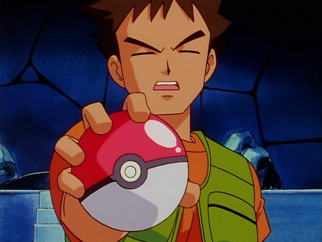
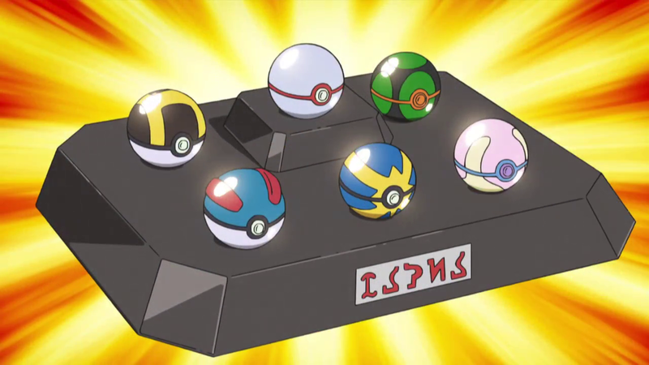

.png)
.png)
O nome Pokémon vem da união de duas palavras em inglês: Pocket Monsters, que significa Monstros de Bolso. E para que essas criaturas, às vezes enormes, possam caber nos bolsos de seus treinadores, eles devem estar dentro de Poké Bolas. As Poké Bolas são itens fundamentais na jornada de um treinador, já que é através delas que se consegue capturar um Pokémon. Inicialmente, as Poké Bolas eram feitas das Bolotas de Carvalho (Apricorns), sendo que cada uma tinha uma propriedade especial, dependendo do fruto usado para fazê-la. Atualmente, empresas como a Devon e a Silph.Co desenvolvem cada vez mais Poké Bolas com novas funcionalidades. Para capturar um Pokémon no anime, deve-se inicialmente enfraquecê-lo e, após isso, lançar a Poké Bola até capturá-lo. Se o Pokémon não estiver fraco o suficiente, ele pode ter força para quebrar a Poké Bola e evitar a captura. Uma outra forma de capturar um Pokémon sem enfraquecê-lo é em situações em que ele mesmo deseja ser capturado pelo treinador que está usando a Poké Bola. Em Jornadas Pokémon, o personagem Goh desafia esta premissa que foi defendida durante muito tempo no anime, capturando seus Pokémon apenas arremessando a Poké Bola, sem enfraquecê-los primeiramente.
Cada treinador pode carregar consigo seis Poké Bolas com Pokémon, por vez, e quando este captura um Pokémon que exceda este limite, a Poké Bola é enviada automaticamente para o Professor que entregou o Pokédex ao treinador, ou para o sistema de depósito global. Quanto ao número de Poké Bolas vazias para futuras capturas, o treinador pode levar consigo quantas ele quiser ou couber na sua bolsa. Para armazenar um Pokémon em seu interior, a Poké Bola o reduz a uma espécie de plasma, e feito isso, o Pokémon não pode ser capturado por outros treinadores - a menos que seja liberado, outra função especial da Poké Bola. A Poké Bola também mostra exercer uma espécie de comunicação sem fio com o Pokédex, já que este tem a capacidade de saber os Pokémon já capturados. As Poké Bolas aparentemente têm um sistema de força interno, que pode vir a atuar em conjunto com os recursos tecnológicos de algum local, ou se travando ao entrar em contato com ondas geomagnéticas. O tamanho da Poké Bola também pode variar, assim como mostrado diversas vezes, apenas apertando o botão em seu centro. Nesse caso, seu tamanho pode ir de aproximadamente uma bola de beisebol (tamanho o qual ela é arremessada) a uma de tênis de mesa, (para realmente caber no bolso do treinador).
Além disso, elas também podem ser abertas pelos próprios Pokémon já capturados, dando a eles a liberdade de sair e retornar a elas quando quiserem. Curiosamente, algumas vezes os Pokémon retornam à Poké Bola ao tocar no mesmo botão que a diminui de tamanho, mas os Pokémon também podem optar por não saírem de suas bolas. As Poké Bolas são planejadas para oferecerem conforto ao Pokémon, mas mesmo assim, alguns Pokémon demonstram não gostar de ficar lá dentro - o maior exemplo desse caso é o Pikachu de Ash. Outro fato curioso é que as Poké Bolas só atuam com Pokémon, convertendo somente eles ao estado plasmático. Quando jogadas em humanos, ela irá simplesmente abrir ou quebrar. Por serem vitais na jornada, as Poké Bolas podem ser vendidas sem restrições em qualquer Loja Pokémon. O Pokédex também apresenta uma de suas entradas exclusiva das Poké Bolas, assim como pode ser observado a seguir:''Enquanto estão sendo treinados, os Pokémon geralmente ficam em suas Poké-Bolas. No entanto, existem algumas exceções, alguns Pokémon odeiam ficar confinados. Pela grande variedade de Pokémon e ambientes que podem alterar as chances de captura, foram desenvolvidos modelos especiais de Poké Bolas, cada uma com sua função específica, que aumenta ou diminui as chances de captura dos Pokémon sob determinadas condições. Conheça todas as Poké Bolas que existem a seguir, de acordo com a região em que ele foi introduzida, bem como as Poké Bolas que são exclusivas do anime.
